Russell Fisher Photography
Break down of my style
In Highschool I loved photoshopping fake movie posters and album covers
I'd get together with friends on weekends and we would just shoot photos pretending to be stars
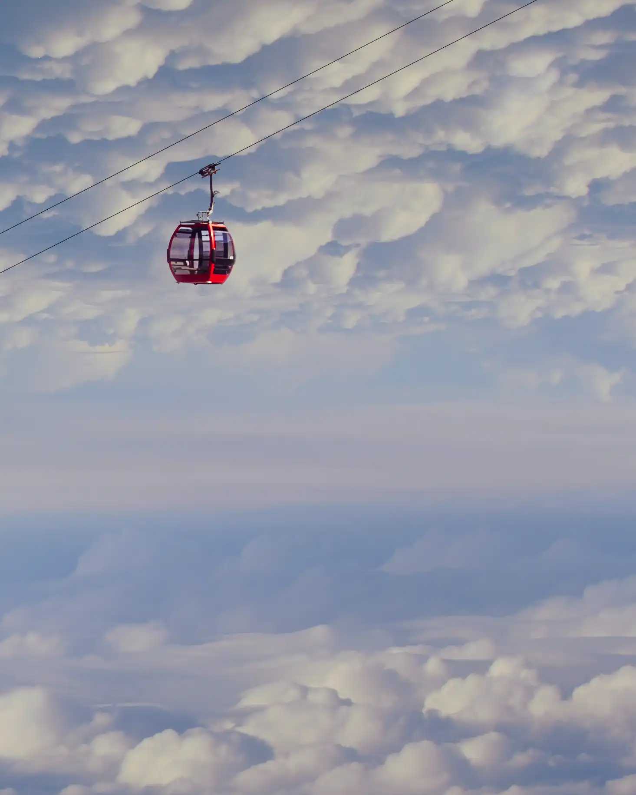
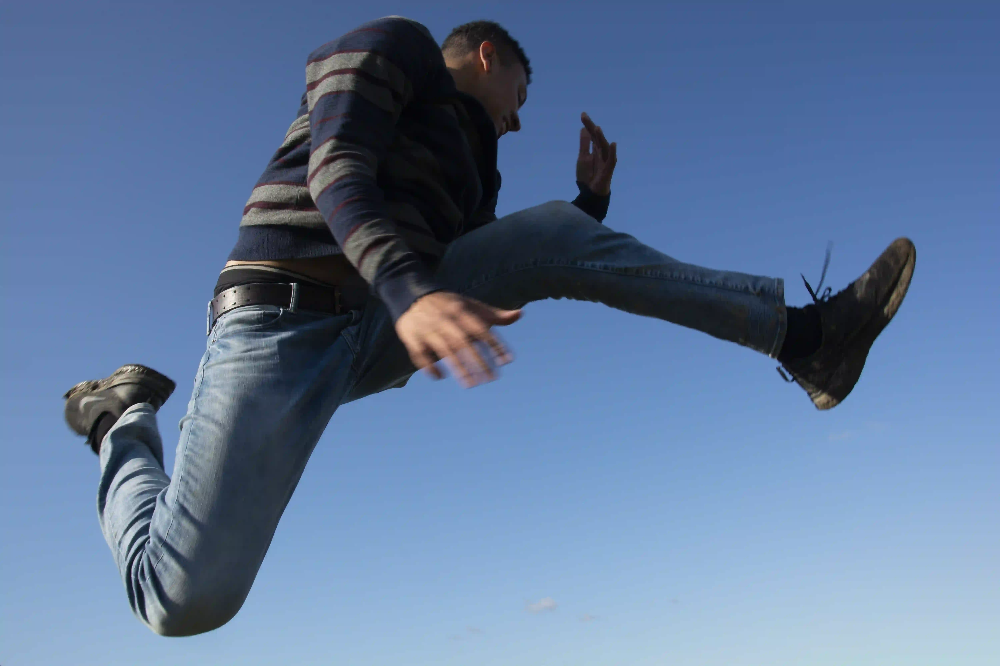
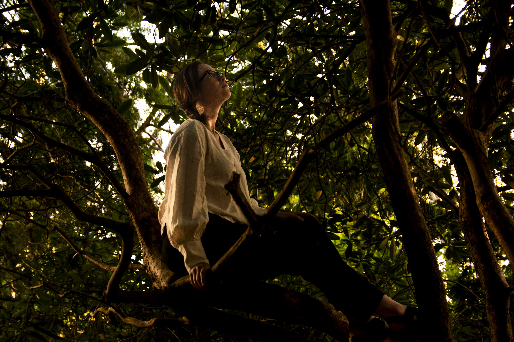
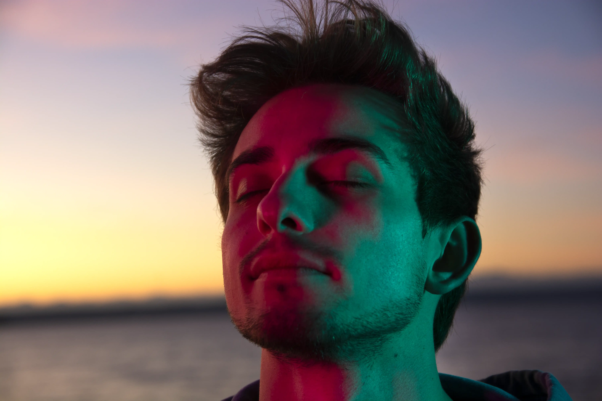
I imagine as if each of my photographs are 1 second screen captures of a movie scene.
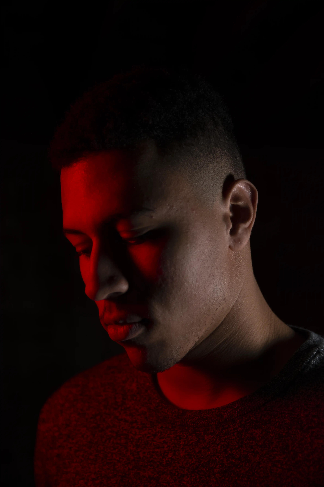
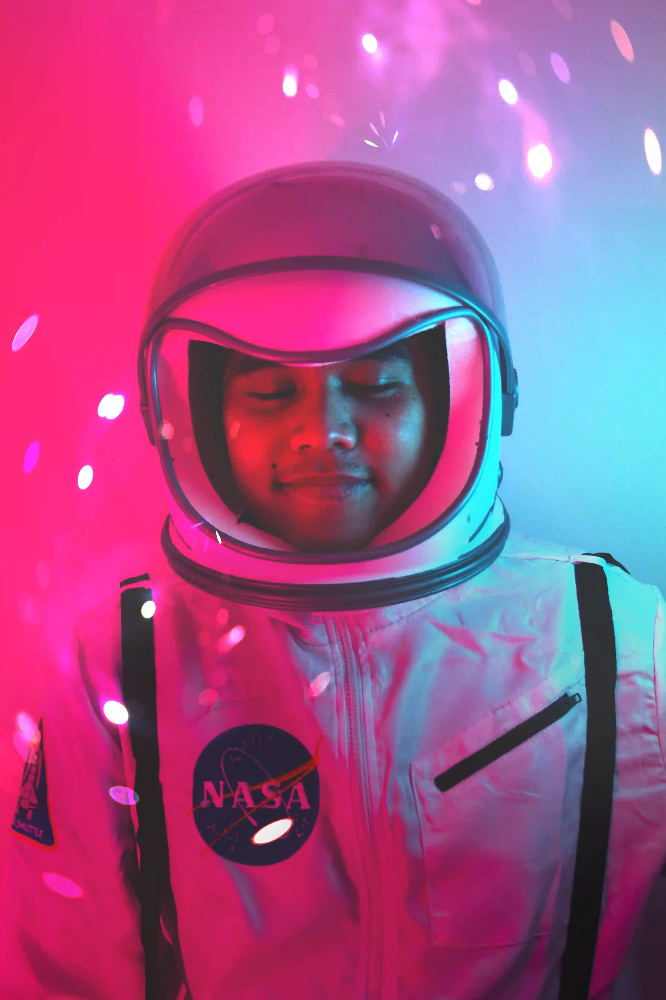
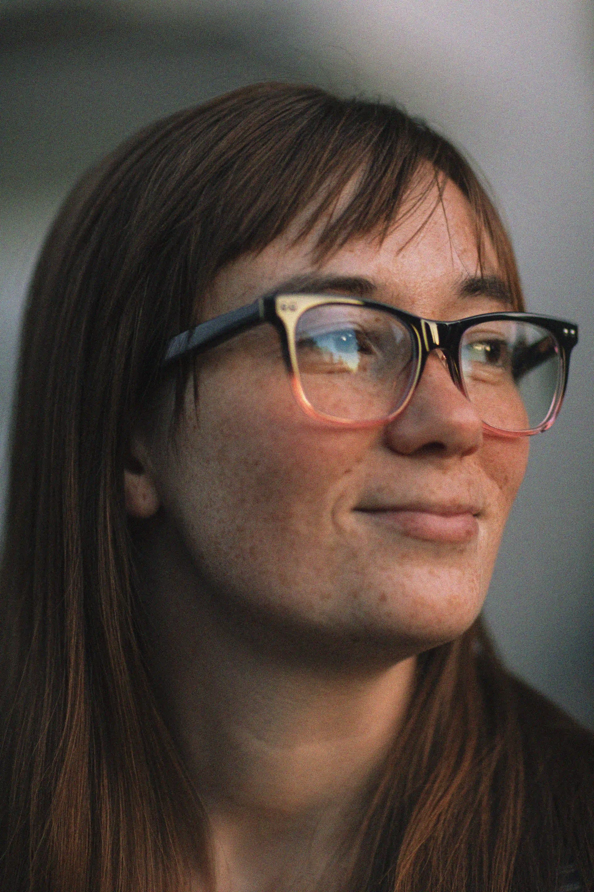
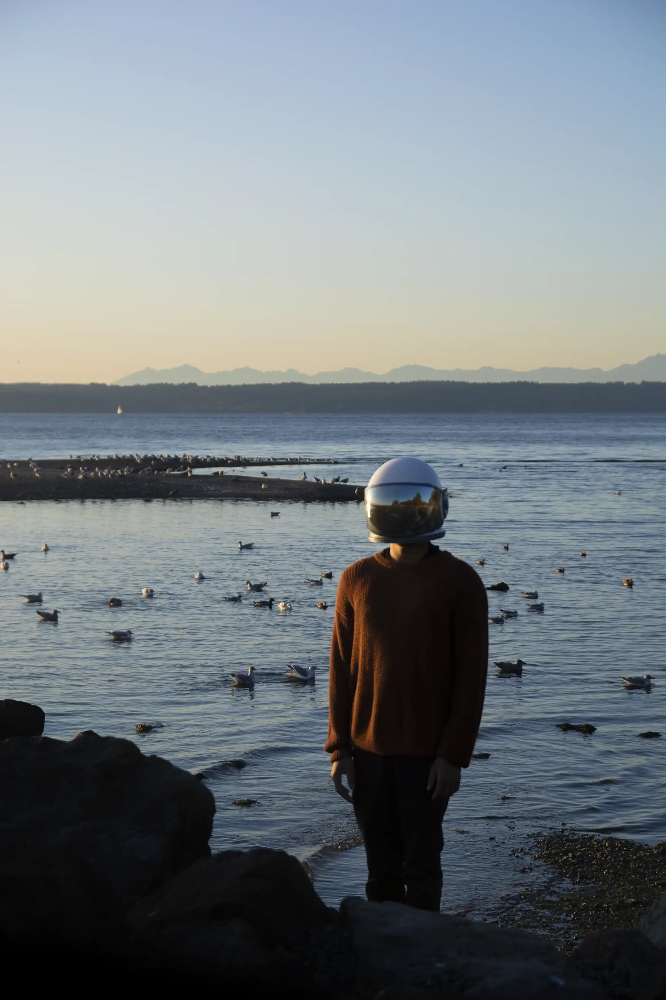
Like many young people out there, I find myself lost in life. This is one of many photographs apart of my lost series; A photo album where I plop an astronaut helmet on people to evoke this feeling of being lost. The astronaut helmet symbolizes isolation and exploration.
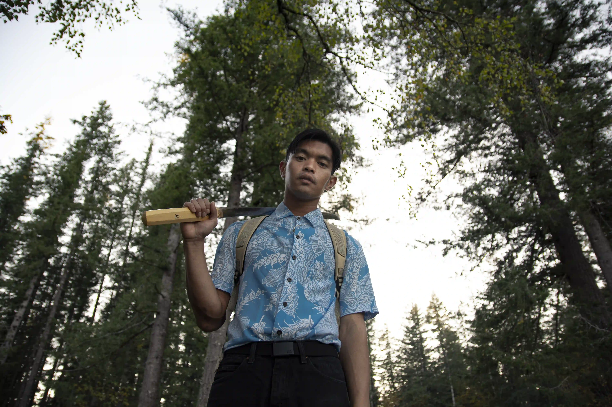
What I enjoy most about this photo is the sense of power from the subject.
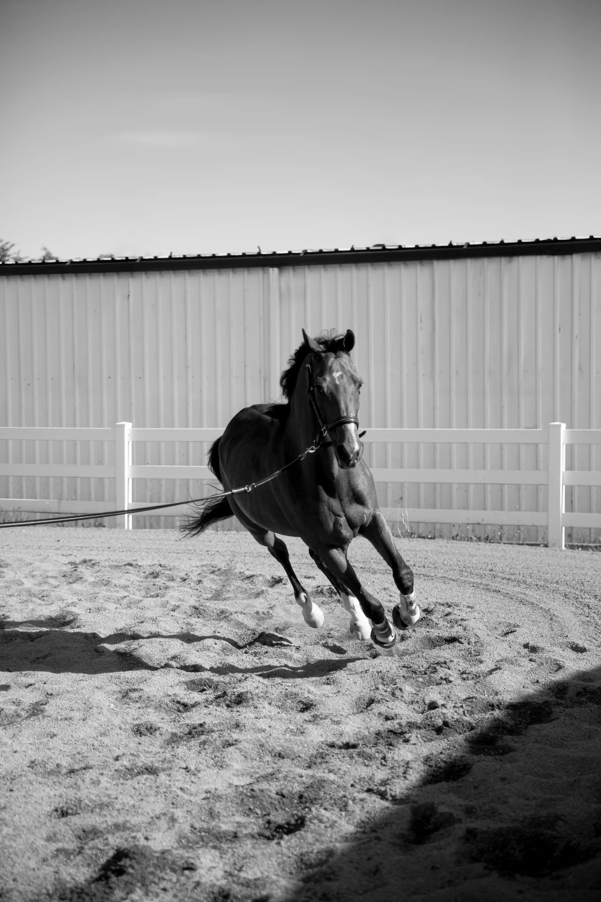
This is one of my favorite action shots I've ever done. It was so cool to finally shoot a horse sprinting in its arena.
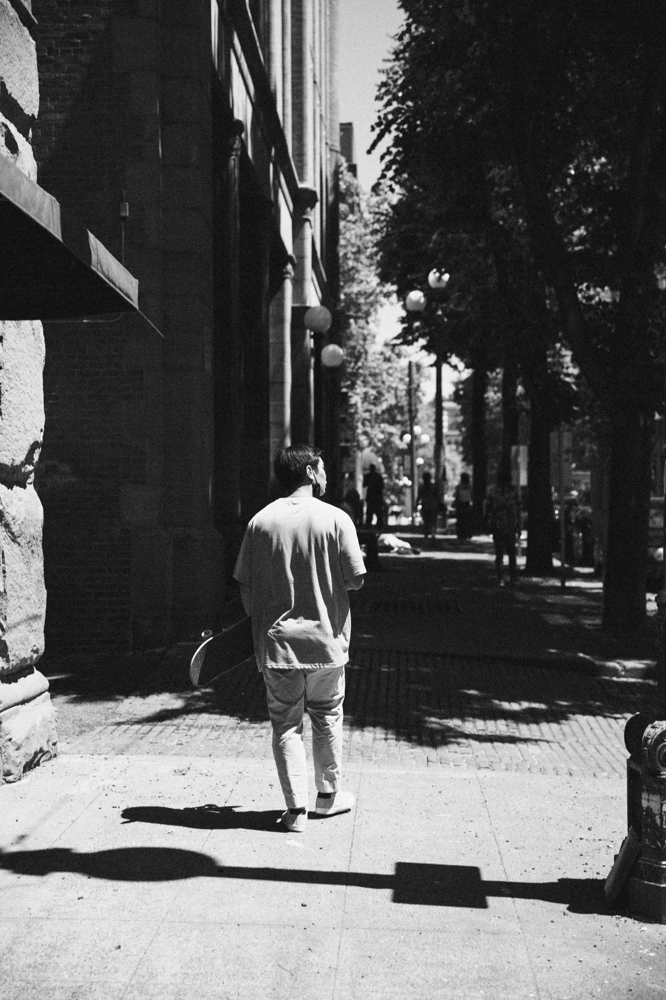
Street photography often requires a run and gun approach to capture candid moments. This makes maintaining good composition difficult.
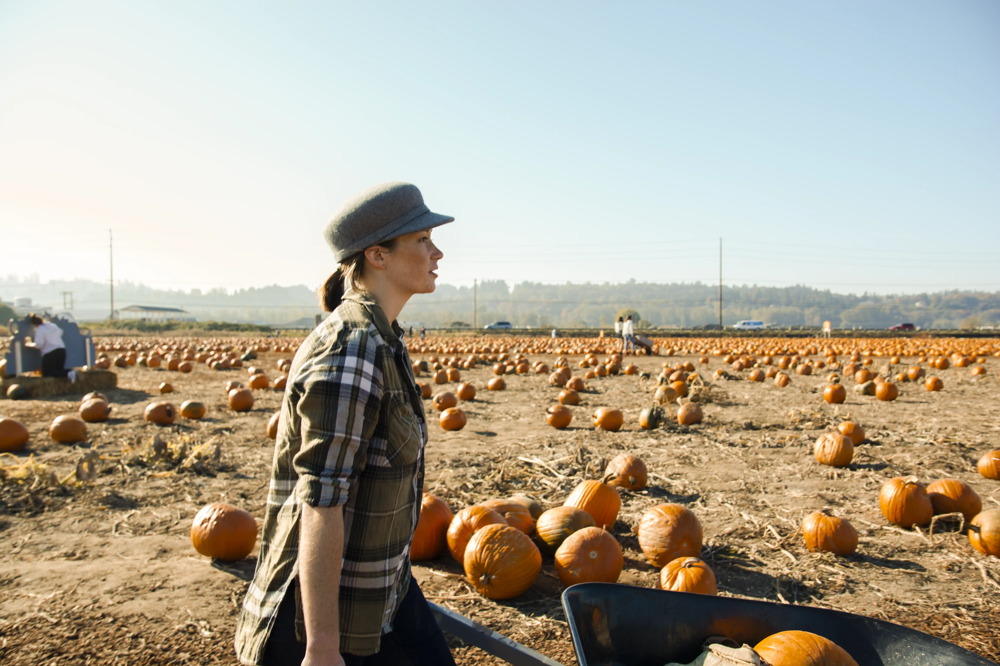
This photo to me is the epitome of looking like it was ripped from a movie. The colors, framing, and slight blur due to the slower shutter speed, give it a cinematic feel.
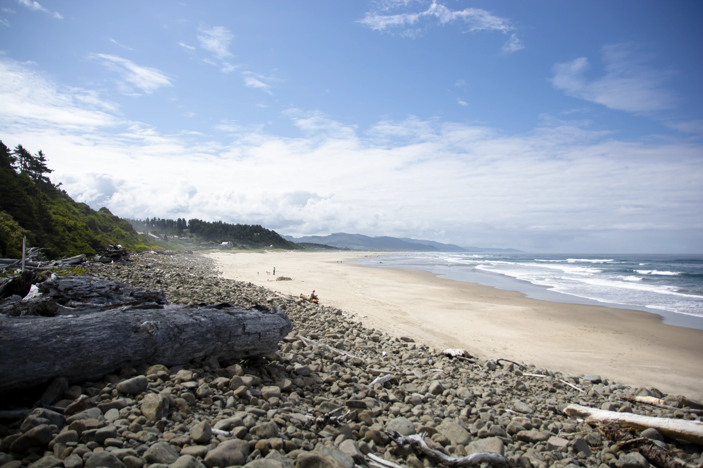
I dont normally take landscape photos, I actually struggle with landscapes and find them very difficult, but this is one of my favorite places in the world; the oregon coast. Not the sexiest beach, but I love the rugged beauty and tranquility it offers.
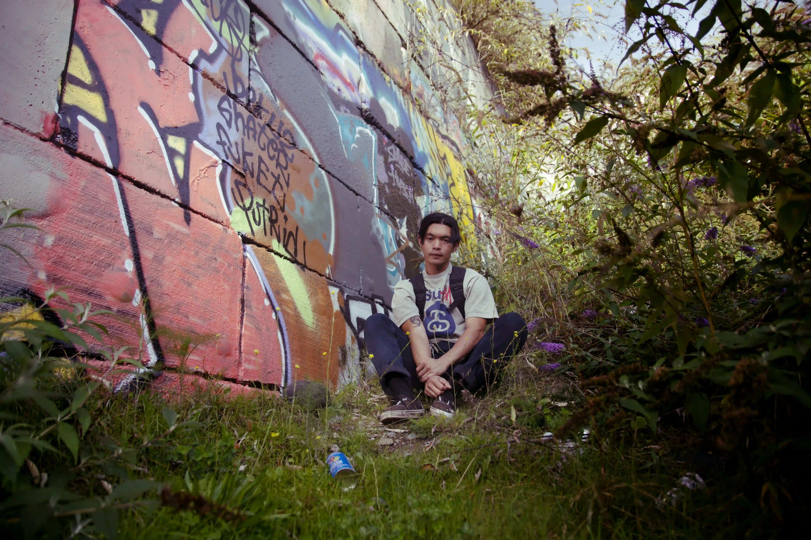
I chose to showcase this photo because it was one of my first photos that I felt really blended lighting and colors in a beautiful way. The techniques I use in this photo I use to edit and color my other photos